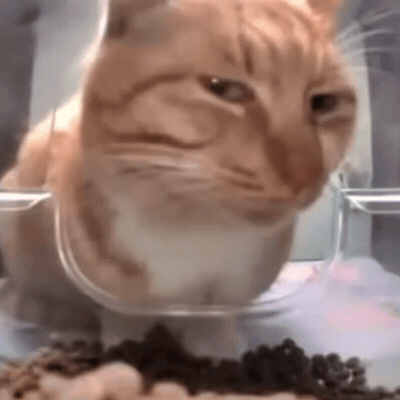

О котиках
Итак, котики бывают:
- Красивыми
- Умными
- И что-нибудь ещё
Характеристики пород:
- Бенгальская
- Активные, любят воду, пятнистый окрас.
- Сфинкс
- Лысые, теплолюбивые, дружелюбные
- Мейн-кун
-
Крупные, пушистые, с кисточками на ушах.
Да не похож я на Мейн-Куна! - Рон Перльман
Вот топ три факта о котиках:
- Первый факт
- Второй факт
- Третий факт
Вот вам фотография котика:

Вот вам GIF с котиком:
Внимание, картинка-ссылка:
Мяу мяу мяу
Собрание произведений М.Котидзе.
мррр мяу мяяу
мяу мяу
мяу
Любовь к котикам измеряется по формуле: ∞∞
В интервью GQ Magazine Джейсон Стэтхэм заявил: Коты - это
не собаки, и точка.
Вот история о том, как помыть котика:
- Подготовьте шампунь для кота, полотенце и перчатки
Откройте кран на полную мощностьНаполните таз теплой водой (неглубоко)Затащите кота в ванну силойАккуратно посадите кота в воду, ласково разговариваяБыстро намыльте всего кота, включая головуМойте тело, избегая морды и ушейОполосните из душа со звуком "шшш!"Ополосните водой из ковша или мягкой губкиСушите феном на максимальной мощностиЗаверните в полотенце и промокните- Похвалите кота и дайте лакомство
Но главное помните: котики - это опасные хищники!